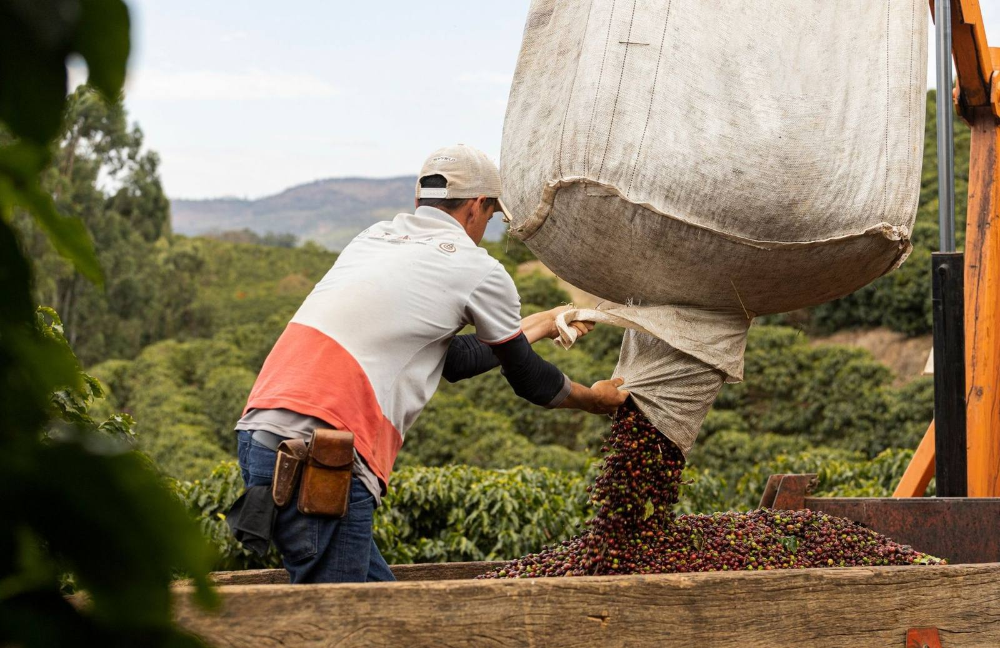

Crédito rural sem banco grande no meio do caminho.
Uma plataforma que tira a burocracia do crédito subsidiado para pequenos e médios produtores de café, em parceria com a Cooxupé. Do discovery ao MVP em produção.

Crédito aprovado em um terço do tempo.
Crédito rural ainda era coisa de banco grande.
Pequenos e médios produtores de café dependiam de grandes bancos: juros altos, seguros embutidos e um processo burocrático e pouco transparente. 40% das solicitações eram abandonadas no meio do caminho.
- Pouca informação qualificada sobre crédito rural.
- Dificuldade para entender etapas e exigências.
- Pouca familiaridade com tecnologia.
- Muito tempo para conseguir crédito, muitas vezes sem sucesso.
Responsável pela experiência e pelo produto, do kickoff à homologação.
Conduzi o projeto de ponta a ponta, lado a lado com o CTO, os desenvolvedores e o QA. O processo passou por oito fases:
O produtor decide por indicação. E quem indica é o agrônomo.
Na imersão em Minas Gerais, ouvi 20 pessoas da cooperativa e 6 produtores. O produtor desconfia de tecnologia e de banco, e decide pela indicação de quem conhece. E havia mais:
Em vez de empurrar um produto com penduricalhos, a plataforma mostra as linhas de crédito para o produtor escolher.
O crédito chega pela cooperativa em que ele já confia, com uma pessoa dedicada adiantando a coleta de dados.
Visão de vários produtores, filtros por status e cadastro em etapas para quem opera o dia a dia.
Do curso na cooperativa ao crédito na conta.
A confiança do produtor nasce no presencial. A ansiedade aparece quando ele envia documentos e não tem retorno.
Do papel e da espera a um fluxo guiado de 24 horas.
O que o produtor enfrentava antes da plataforma e o que mudou depois do lançamento.
- 72h+para aprovar o crédito
- 7documentos exigidos
- 5interações até a resposta
- 40%das solicitações abandonadas
- 24hpara aprovar o crédito
- 80%das validações automáticas, ligadas a sistemas do governo
- WhatsAppavisa o produtor a cada etapa
- +31%de solicitações no primeiro trimestre
Confiança antes de qualquer formulário.
A primeira tela fala com quem confia no aperto de mão. Os números marcam as decisões que vieram da pesquisa.
- 1Aperto de mão no lugar de gráficoA confiança do produtor nasce no presencial, então a primeira imagem mostra exatamente isso.
- 2Sem cara de bancoVerde da marca e linguagem do campo. O público já resistia ao visual de instituição financeira.
- 3Atendimento sempre à vistaO chat foi um dos elementos de confiança priorizados no BMC 2.0.
Quer ver os bastidores?
Mostro a versão completa em uma conversa ou envio o material por e-mail:
- Business Model Canvas, Matriz CSD e personas
- Pesquisa de campo e os números da cooperativa
- Fluxos por perfil e arquitetura da informação
- O handoff que levou o retrabalho de 45% para 12%